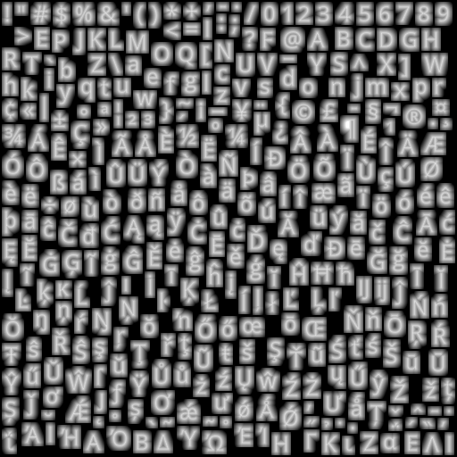

GL Text Rendering 101
This document is intended as a high level architectural overview of the path from a text-field entry in a style specification to pixels on a screen. The primary audience is new maintainers or contributors to mapbox-gl-native and mapbox-gl-js, although it may also provide useful context for power users of Mapbox GL who want to know how the sausage is made.
Native and JS share very similar implementations, with occasionally different naming conventions. I will use them mostly interchangeably. For simplicity, I focus on text, but icons are a very close analog — for many purposes, you can think of an icon as just a label with a single “glyph”.
Motivation
Why are we rolling our own text rendering in the first place, when browsers and operating systems already provide powerful text capabilities for free? Basically:
- Control: To make beautiful interactive maps, we’re changing properties of the text in label on every frame
- Size/scale
- Relative positioning of glyphs (e.g. following a curved line)
- Paint properties
- Speed: If we asked the platform to draw the text for us and then uploaded the raster results to textures for rendering on the GPU, we’d have to re-upload a large amount of texture data for every new label, every change in size, etc. By rolling our own text rendering, we can take advantage of the GPU to efficiently re-use/re-combine small constituent parts (glyphs)
Legible, fast, and beautiful is the name of the game.
For some history on how this took shape, check out Ansis' "label placement" blog post from 2014 (many implementation details have changed, but the goals are the same).
Requesting glyphs: text-field + text-font → GlyphDependencies
Imagine a toy symbol:
"layout": {
"text-field": "Hey",
"text-font": [
"Open Sans Semibold",
"Arial Unicode MS Bold"
]
}
The text-font property is specified as a fontstack, which looks like an array of fonts, but from the point of view of GL is just a unique string that’s used for requesting glyph data from the server. Font compositing happens on the server and is totally opaque to GL.
At tile parsing time, the symbol parsing code builds up a glyph dependency map by evaluating text-field and text-font for all symbols in the tile and tracking unique glyphs:
GlyphDependencies: {
"Open Sans Semibold, Arial Unicode MS Bold": ['H', 'e', 'y'],
"Open Sans Regular, Arial Unicode MS": ['t', 'h', 'e', 'r', 'e']
}
It’s worth noting here that our current code treats “glyph” and “unicode codepoint” interchangeably, although that assumption won’t always hold.
Once all the dependencies for a tile have been gathered, we send a getGlyphs message to the foreground, and wait for a response before moving on to symbol layout (unless the worker already has all the dependencies satisfied from an earlier request).
native
SymbolLayout constructor: symbol_layout.cpp
js
SymbolBucket#populate: symbol_bucket.js
GlyphManager
The GlyphManager lives on the foreground and its responsibility is responding to getGlyphs requests with an SDF bitmap and glyph metrics for every requested glyph. The GlyphManager maintains an in-memory cache, and if all the requested glyphs are already cached, it will return them immediately. If not, it will request them.
Server Glyph Requests Every style with text has a line like this:
"glyphs": "mapbox://fonts/mapbox/{fontstack}/{range}.pbf"
This tells the GlyphManager where to request the fonts from (mapbox://fonts/… will resolve to something like https://api.mapbox.com/…). For each missing glyph, the GlyphManager will request a 256-glyph block containing that glyph. The server is responsible for providing the block of glyphs in a Protobuf-encoded format. Requests to api.mapbox.com (and probably most requests to custom-hosted font servers) are ultimately served by node-fontnik.
When the response comes back over the network, the GlyphManager will upload all the glyphs in the block to its local cache (including ones that weren’t explicitly requested). Once all dependencies are satisfied, it will send a response back to the worker.
Local Glyph Generation
The server request system above works pretty well for Latin scripts — usually there’s just one 0-255.pbf request for every fontstack. But it’s a disaster for ideographic/CJK scripts. That’s why we implemented local CJK glyph generation.
When local glyph generation is enabled, it’s the glyph manager who’s responsible for choosing whether to go to the server or generate locally, and the rest of the code doesn’t have to worry about it.
GlyphAtlas
Once the worker receives glyph information from the foreground, it builds a GlyphAtlas out of every glyph that will be used on a tile. The glyph atlas is a single image that will be uploaded as a texture to the GPU along with the rest of the data for the tile. Here’s a visual representation of a glyph atlas:

Once we’ve uploaded the glyph atlas to the GPU, we can represent each glyph we want to draw as two triangles, where the vertices encode both physical locations on the map but also a “lookup” location within the glyph atlas texture.
The raster format of the glyph is not a typical grayscale encoding — instead, it’s a “signed distance field” (SDF), a raster format in which the value of each pixel encodes how far away it is from the “edge” of the glyph. SDFs make it easier for us to do things like dynamically resize text or draw “halos” behind text. For an in-depth description, read Konstantin’s SDF devlog.
Symbol Layout
At the time we parsed the tile, we created one SymbolBucket for each set of symbol layers that shared the same layout properties (typically there is a 1:1 mapping between style layers and symbol buckets — but when two style layers differ only in their paint properties we share their layout work as an optimization). After parsing, the bucket contains a list of “features” that point into the raw vector tile data.
“Layout” is the process of turning those raw features into GL buffers ready for upload to the GPU, along with collision metadata (the FeatureIndex). The process starts by iterating over every feature, evaluating all of the style properties against that feature, and generating anchor points for the resulting symbol. Then we move on to shaping…
native
SymbolLayout::prepareSymbols: symbol_layout.cpp
js
performSymbolLayout: symbol_layout.js
Shaping
Shaping is the process of choosing how to position glyphs relative to each other. This can be a complicated process, but the basics are pretty simple — we start by placing our first glyph at some origin point, then we advance our “x” coordinate by the “advance” of the glyph, and place our second glyph. When we come to a line break, we reset our “x” coordinate and increment our “y” coordinate by the line height.

We do shaping in a coordinate system that’s independent for each symbol — basically the positions are always relative to the symbol anchor. For symbol-placement: point, each glyph gets an “x” and “y” coordinate. For symbol-placement: line, we always lay out in a single line and essentially collapse to just “x” coordinates (at render time, we use the line geometry to calculate the actual position of each glyph).
Line Breaking The shaping code is responsible for determining where to insert line breaks. The algorithm we use tries to find a set of line breaks that will make all lines of a label have relatively similar length. For details on the algorithm (and why this is important for CJK labels), see my blog post on line-breaking.
BiDi and Arabic “Shaping” The shaping code is also responsible for applying the Unicode Bidirectional algorithm to figure out how to interleave left-to-right and right-to-left text (it’s actually intertwined with line breaking). It’s actually not responsible for the thing we call “arabic shaping”, which is actually a codepoint substitution hack implemented in the earlier tile parsing stage. For more details, see my blog post on supprting Arabic text.
Vertical Text Layout We have support for rotating CJK characters when they’re following a line that’s within 45 degrees of vertical. The way the implementation works is to run shaping twice: once in horizontal mode, and once in vertical mode (where CJK characters are rotated, but non-CJK characters aren’t). We upload both shapings to the GPU, and at render-time we dynamically calculate the orientation of each line label (based on current camera position), and based on that toggle which set of glyphs to hide/show.
Variable Text Anchors We’ve just added the ability for symbols to automatically change their anchor position to find a place to “fit” on the map. If changing the anchor may also require the text justification to change, we generate an extra shaping for each possible justification, and choose which set of glyphs at render time.
native
getShaping: shaping.cpp
js
shapeText: shaping.js
Generating Quads
The process of going from a shaping to GL buffers is pretty straightforward. It’s just a matter of taking each rectangular glyph from the shaping and turning it into two triangles (called a “quad”). We apply transforms like text rotation here, but essentially the way to think of it is just a translation between different in memory-representations of the same data.
After the buffers are generated, background work is essentially done, and we transfer all the buffers for our tile to the foreground, so it can start rendering.
native
quads.cpp and SymbolLayout::addSymbol
js
quads.js and SymbolBucket::addSymbol
The Foreground
All of the work up to this point happened in the background — if it takes longer to run, it means tiles take longer to load. Background work has to be fast relative to the cost of loading a tile from the network (or disk). If a tile can parse in 50ms, that’s fine. On the foreground, anything that takes more than a few millisecond will cause ugly, janky rendering.
Every 16ms, the render thread is responsible for drawing a frame with the contents of the currently loaded tiles. For symbols, this involves a few components:
- Collision detection (running every 300ms)
- Per-layer CPU work (mainly updating line label positions)
- Per-layer GPU draw calls (running the shaders)
We originally did collision detection and line label layout on the background (along with the GPU), but despite the strict limits on render-thread CPU time, we moved them to the foreground over the course of 2017. Why?
- Each symbol instance comes from a specific tile, but symbols render across tile boundaries and can collide with each other across tile boundaries. Doing collision detection properly required global collision detection, and the foreground is the one place that has all the data available.
- Text is way more legible laid out on the plane of the viewport, but background layout is necessarily done on the plane of the map, and the GPU has limited capability to re-do layout, since it has to handle each vertex in isolation from all the other vertices that make up a label.
The cumulative effect of the "pitched label quest" of 2017 was a dramatic improvement in the legibility of our maps in pitched views:
| Before: gl-js v0.37, streets-v9 | After: gl-js v0.42, streets-v10 |
|---|---|
 |  |
Basics of Collision Detection (aka “Placement”)
To understand how our collision detection works, dig into the Collision Detection article.
The basic idea is that we represent each symbol as a box (for point labels) or as a series of circles (for line labels). When we run collision detection, we start with our highest priority feature, add its geometry to a 2D spatial index, and then move on to the next feature. As we go through each feature, we only add features that don’t collide with any already-placed features.
Fading After collision detection finishes, we start fading in newly placed items and fading out newly collided items. We do this by uploading “opacity buffers” to the GPU for every symbol layer. For every symbol, we encode the current opacity and the “target” opacity (either 1 or 0). The shader then animates the fading by interpolating between “current” and “target” based on the global clock.
CrossTileSymbolIndex
We use a data structure called the CrossTileSymbolIndex to identify symbols that are “the same” between different tiles (“same” ~ “similar position and same text value”). This is important for smooth zooming without symbols flickering in and out — instead of having to re-run collision detection whenever we load a new tile in order to figure out what we can show, we just match the symbols in the new tile against previously shown symbols, and if we find a match we use the same opacity information for the new symbol (until the next collision detection runs).
Pauseable Placement JS has a feature that splits collision detection across multiple frames, with a ~2ms limit for each frame. This adds complexity to the code, and on the native side we got acceptable performance without this feature, so we never implemented it.
Symbol Querying
We have a long tradition of implementing new features and only when we think we’re finished realizing that we broke the queryRenderedFeatures functionality. Symbol querying is built on top of the CollisionIndex — we translate queries into the coordinates used by the collision index, get a list of symbols that intersect with the query coordinates, and then look up the data for the underlying features in the underlying (per-tile) FeatureIndex.
native
placement.cpp and cross_tile_symbol_index.cpp
js
placement.js and cross_tile_symbol_index.js
Render-time layout for line labels
Labels on curved lines in a pitched view are tricky. We want the glyphs to have consistent spacing in the viewport plane, but we want the glyphs to follow lines that are laid out in the tile plane, and the relationship between tile coordinates and viewport coordinates changes on every frame.
We brute-force the problem. For every line label, we transfer not only its glyphs to the foreground, but also the geometry of the line that it’s laid out on. At render time, we start at the anchor point for the label, and figure out where the ends of that line segment end up in viewport space. If there’s enough space for the label, we lay it out along that projected line. Otherwise, we keep moving outward, one line segment at a time, until there’s enough room for the whole label, and for each glyph we calculate x/y coordinates based on where it fits on the projected lines. Then, we upload all of this layout data to the GPU before drawing.
This is expensive! On dense city maps, it shows up as our biggest render-thread expense. But it also looks good.

We also use this render-time line projection logic to determine which “collision circles” should be used for a label (as you pitch the map, vertically oriented labels essentially get “longer”, so they need to use more collision circles). It’s a historical accident that we create these collision circles on the background and then dynamically choose which ones to use on the foreground — if we were starting fresh, we would just generate the collision circles on the foreground.
native
See reprojectLineLabels in render_symbol_layer.cpp
js
See symbolProjection.updateLineLabels in draw_symbol.js
Perspective Scaling
What’s up with this formula: 0.5 + 0.5 * camera_to_center / camera_to_anchor?
It’s a technique for making far-away text somewhat easier to read, and to keep nearby text from taking up too much space. After a lot of prototyping and over-design, Nicki and I decided on a simple rule: “all text in pitched maps should scale at 50% of the rate of the features around it”. So if your label is over a lake in the distance that is drawn at 25% of the size it would be in the center of the map, your text should be drawn at 50% of the size it would be in the center of the map.
In the formula, “camera to center” is the distance (don’t worry about the units, although they’re kind of pixel-based) to the point in the center of the viewport. This is a function of the viewport height and the field of view. “camera to anchor” is the distance to the anchor point of a symbol, in the same units. In an un-pitched map, “camera to anchor” is the same as “camera to center” for every point (if you think about this, it’s not actually the same as if you were staring down at a paper map flat on the table!).
| Before: Dense, hard-to-read labels in the distance | After: Fewer but larger labels in the distance |
|---|---|
 |  |
Units, planes, and projections
Understanding or modifying text code requires a firm grasp of the units involved, and it’s easy to lose track of which you’re working with:
- point The internal unit of glyph metrics and shaping
- Converted to pixels in shader by
fontScale
- Converted to pixels in shader by
- em For us, an “em” is always 24 points.
- When we generate SDFs, we always draw them with a 24 point font. We then scale the glyph based on the
text-size(so a 16 point glyph for us is just 2/3 the size of the 24 point glyph, whereas the underlying font might actually use different glyphs at smaller sizes) - Commonly used for text-related style spec properties
- https://en.wikipedia.org/wiki/Em_(typography)
- When we generate SDFs, we always draw them with a 24 point font. We then scale the glyph based on the
- pixel Self explanatory, right?
- Except these are kind of “imaginary” pixels. Watch out for properties that are specified in pixels but are laid out in tile-space. In that case we may transform them to something that’s not literally a pixel on screen
- See
pixelsToGLUnitsandpixelsToTileUnits
- tile unit value between 0 and tile EXTENT (normalized to 8192 regardless of extent of source tile)
- This is the basic unit for almost everything that gets put in a GL buffer. The transform form a tile converts tile units into positions on screen.
- Assuming 512 pixel tile size and 8192 EXTENT, each tile unit is 1/16 pixel when the tile is shown at its base zoom and unpitched. See
pixelsToTileUnitsfor conversion logic at fractional zoom, and of course in pitched maps there’s no direct linear conversion.
- gl coordinates/NDC [-1, 1] coordinates based on the viewport
- NDC or “normalized” form is just gl-coord x,y,z divided by the “w” component.
u_extrude_scaleis typically used in the shaders to convert into gl units
When you modify a point, you always want to use units that match the coordinate space that you’re currently working in. “Projection” transform points from one coordinate space to the next.
- Tile coordinate space
- Use tile units
- Different tiles have different coordinates, but they’re all in the “plane” of the map (that is, the potentially-pitched “surface”)
- Map pixel coordinate space
- Use pixel units
- Transformed from tile units to pixels, but still aligned to the map plane. May be rotated
- Viewport pixel coordinate space
- Use pixel units
- Aligned to viewport (e.g. “flat” relative to viewer)
- GL coordinate space
- Use gl units
- Aligned to viewport
In the text rendering code, the labelPlaneMatrix takes you from tile units to the “label plane” (the plane on which your text is drawn), and then the glCoordMatrix takes you from the label plane to the final gl_Position output. The order of projection depends on what you’re drawing — the two most common cases are:
- Viewport-aligned line labels: use
labelPlaneMatrixto project to viewport-pixel coordinate space in CPU, do layout, pass “identity”labelPlaneMatrixto shader, then applyglCoordMatrixin shader. - Viewport-aligned point labels: pass tile→viewport-pixel
labelPlaneMatrixto shader, which applies projection, does pixel-based layout, then projects to GL coords.
For more details on the coordinate systems, see the comments at the header of: projection.js
For a more detailed walk-through of how we transform points, see Mapbox GL coordinate systems. Or, just to develop an intuition, play with this interactive demo.
How to love the symbol_sdf shader
Phew, we’re finally at the point where something gets drawn on the screen!
Vertex Shader The vertex shader is responsible for figuring out where the outer edges of each glyph quad go on the screen. Its input is basically: an anchor, an offset, and a bunch of sizing/projection information.
There are a few steps:
- Figuring out the “size”
- works differently depending on whether the property is zoom or feature-dependent
- Figuring out the “perspective ratio”
- Based on projecting
a_pos, which is the anchor for the symbol as a whole. Easy to confuse witha_projected_pos, which in the case of line labels can be the CPU-projected position of a single glyph (while in the case of point labels it’s the same asa_pos).
- Based on projecting
- Offsetting the vertex from the label-plane
projected_pos, including rotation as necessary - Calculating opacity to pass to fragment shader
- Projecting to gl coordinates, passing texture coordinates to fragment shader
Fragment Shader The fragment shader is given a position within the glyph atlas texture, looks it up, and then converts it into a pixel value:
alpha = smoothstep(buff - gamma_scaled, buff + gamma_scaled, dist);
üëÜ dist is the ‚Äúsigned distance‚Äù we pull out of the texture. buff is basically the boundary between ‚Äúinside the glyph‚Äù and ‚Äúoutside the glyph‚Äù (dirty secret: we call them ‚Äúsigned distance field‚Äù, but we actually encode them as uint8s and treat 192-255 as ‚Äúnegative‚Äù). gamma_scaled defines the distance range we use to go from alpha 255 to alpha 0 (so we get smooth diagonal edges).
The fragment shader also applies paint properties in a fairly obvious way.
Icons
The astute will note that symbol_icon has a nearly-identical vertex shader, while its fragment shader does lookup in an RGBA texture instead of an SDF. The wise will also know that GL supports uploading SDF icons, so sometimes icons are actually rendered with symbol_sdf.
Tada! üéâ

Aww‚Ķ crap. When something doesn‚Äôt work in the shader, you‚Äôre lucky if the result is this üëÜ legible. You can‚Äôt debug directly in the shader, so how can you tell what‚Äôs going wrong?
- Check your units!
- Pause right before the call to
gl_drawElements, examine all the inputs, and try simulating the shader code by hand with pen and paper for one or two vertices. This is fun and doing it regularly will probably reduce your risk of getting dementia when you’re older. - Use an OpenGL debugger (such as WebGL Inspector extension in Chrome) to capture all the draw calls going into a frame. This is good for eyeballing things like “what’s in the texture I just uploaded”. You can also use it to look at the contents of the buffers being used in the draw call, although in my experience it’s easier to inspect them on the CPU side.
- Write debugging code in the shader — the tricky thing is getting creative with figuring out how to extract debug information by drawing it onscreen. The “overdraw inspector” is a simple but very useful example of this approach.